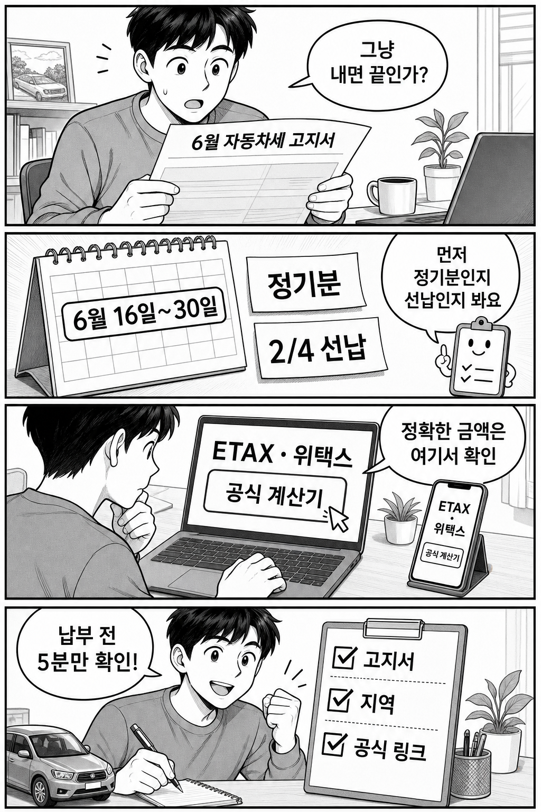

결론부터 말하면, 6월 자동차세 고지서를 받았다고 바로 납부 버튼부터 누를 필요는 없습니다. 6월 16일~30일 기간에는 정기분 납부와 함께 남은 기간에 대한 선납/연납 확인이 겹쳐 보일 수 있어서, 먼저 고지서 성격과 공식 계산기를 확인하는 편이 안전합니다.
이 글은 절세 조언이나 금액 보장 글이 아닙니다. 서울은 ETAX, 그 외 지역은 위택스·지자체 안내에서 본인 고지서 기준으로 확인하는 순서만 정리합니다.

6월에는 자동차세 정기분 고지서를 보는 사람이 많습니다. 그런데 같은 시기에 남은 기간에 대한 연세액 납부, 즉 흔히 말하는 연납/선납을 확인하려는 사람도 생깁니다. 그래서 검색 결과만 보고 “무조건 얼마 할인”처럼 이해하면 틀릴 수 있습니다.
공제 여부와 금액은 차량, 납부 이력, 지역 화면, 남은 기간에 따라 달라질 수 있습니다. 이미 1월이나 3월에 연납을 했다면 6월 화면에서 기대한 선택지가 보이지 않을 수도 있습니다.
정리하면, 6월 자동차세는 “고지서 확인 → 지역 공식 사이트 → 공식 계산기/납부 화면” 순서로 보면 됩니다. 납부 자체보다 중요한 것은 내가 지금 보는 금액이 정기분인지, 남은 기간 선납인지 헷갈리지 않는 것입니다.